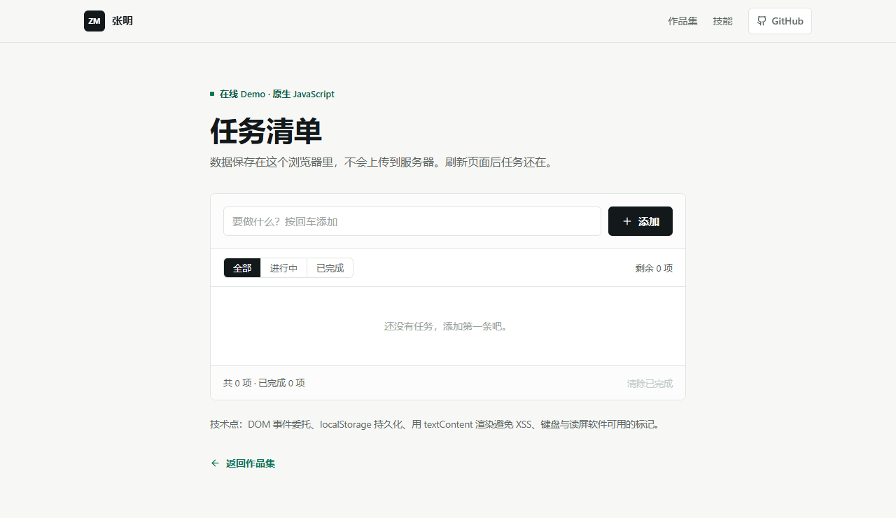

精选项目
两个可以直接打开、也能讲清楚取舍的小作品。点进去都能上手操作。
技能
不堆名词，只写我现在真的能动手做的部分。
前端基础
- 语义化 HTML 与可访问性
- Flex / Grid 响应式布局
- 原生 JavaScript 与 DOM
- 事件委托与状态管理
工具与协作
- Git 提交与分支
- GitHub Pull Request 流程
- 浏览器 DevTools 调试
- GitHub Pages 部署
正在补
- TypeScript 类型设计
- React 组件化开发
- 接口联调与数据库基础
- 性能与首屏优化
- GitHubgithub.com/your-username
- 微信加我请先发邮件
- 位置上海 · 可远程